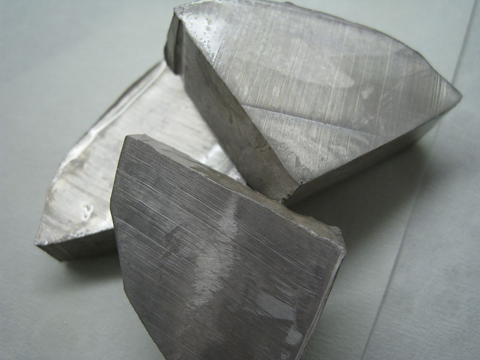
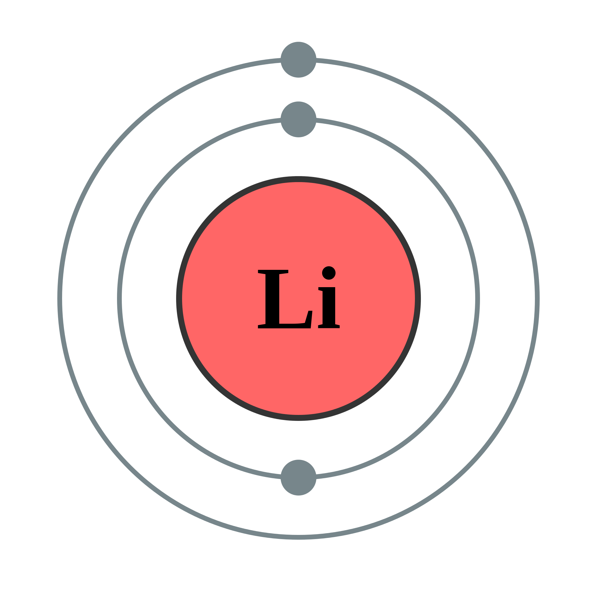
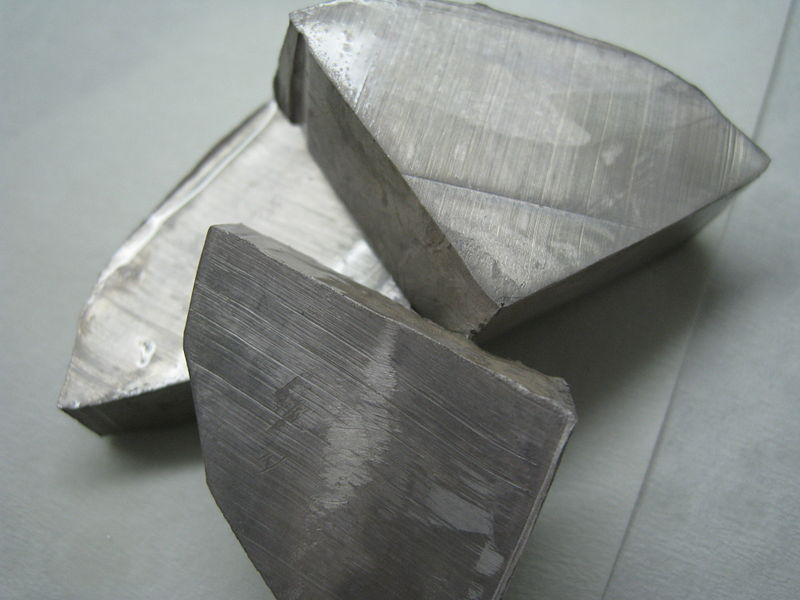
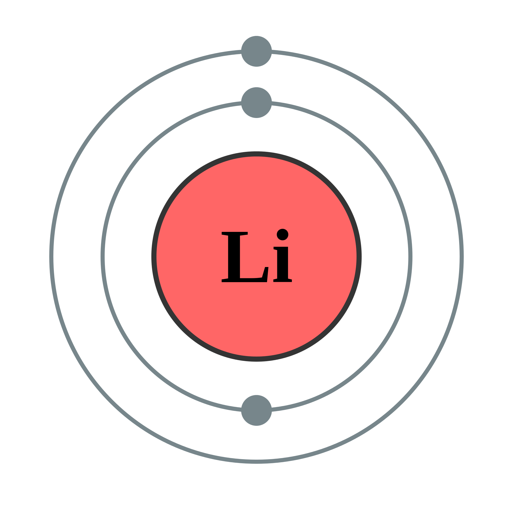

Lithium
 



Reactions of Lithium
Halogens (Group 17)
Lithium metal reacts directly with Group 17 elements.2Li(s) + F2(g) --> 2LiF(s)
2Li(s) + Cl2(g) --> 2LiCl(s)
2Li(s) + Br2(l) --> 2LiBr(s)
2Li(s) + I2(s) --> 2LiI(s)
All Lithium halides are white solids that dissolve in water
Water
Lithium metal reacts with water to produce Lithium Hydroxide and Hydrogen.Lithium + water --> Lithium Hydroxide + Hydrogen
2Li(s) + H2O(l) --> 2LiOH(aq) + H2(g)